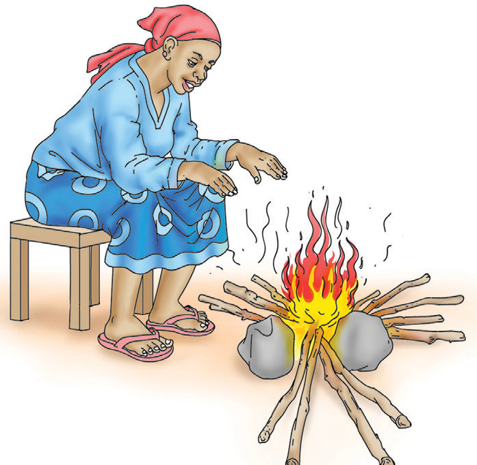
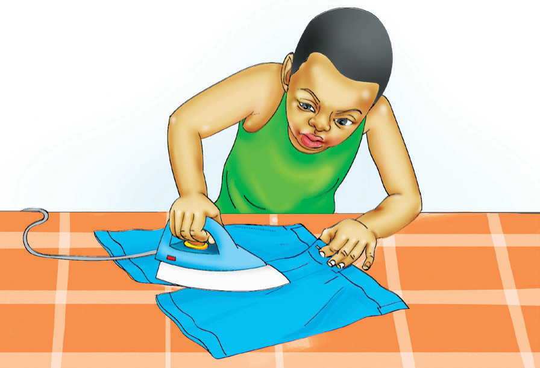
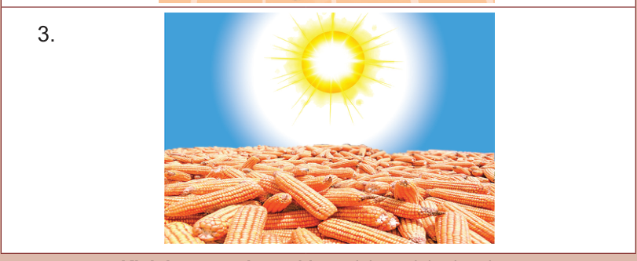

Kazi namba 5: Kubainisha matumizi ya nishati ya joto
Eleza matumizi ya nishati ya joto kwa kutumia Kielelezo namba 5:
1.

2.

3.

Kielelezo namba 5: Matumizi ya nishati ya joto
Vilevile, tunatumia joto kupikia chakula na kukaushia nguo.
Matumizi mengine ya joto ni kuchemsha maji ya kunywa, kuangulia vifaranga, na kuchoma nyama.